履歴書の書き方
履歴書は、就職や進学（留学）をしようとするときには常に必要とされる書類である。ここでは、日本語の履歴書の書き方について学ぶ。
履歴書とは？
自分が、今までにどのような学校で学んで（学歴）、どのような職場で仕事をしてきたのか（職歴）などを簡潔に記した書類（リスト）を履歴書という。
就職や進学では、応募要項の必要書類の中に履歴書が記載されているのが普通である。また、まず電話での問い合わせ・応募を求めている場合も、面接の際には履歴書を持参しなければならない。
履歴書用紙の選び方
応募要項で履歴書の書式が指定されている場合は、指定の書式に従う。最近では、指定の書式をウェブからダウンロードするようになっている場合もある。
履歴書の書式が指定されていない場合や市販の履歴書を使用するように求められている場合は、コンビニエンスストアや文房具店で履歴書用紙を購入しなければならない。
市販の履歴書には、多くの種類があるが、基本的には新卒者用と転職者用とに区別できる。新卒者用か転職者用かは履歴書のパッケージに明記されているので、新卒者用を選べばよい。また、アルバイトの面接などでは、項目が簡略化されたアルバイト用の履歴書を利用してもよい。
履歴書のサイズにもいくつかの種類があるが、Ｂ５サイズ（Ｂ４を二つ折りにしたもの）のものが一般的である。応募要項で特定のサイズが指定されていない場合は、Ｂ５サイズのものを使えばよい。
履歴書の作成
履歴書は、手書きで作成するのが一般的である。コンピュータで作成したものを使うと、手抜きをしていると思われてしまうかもしれないので、できるだけ手書きで作成するのがよいだろう。手書きの履歴書を複写（コピー）したものをつかうなどは論外である。
ただし、応募要項に「形式自由」などと明記されていれば、コンピュータで作成したものでかまわない。その場合も、複写（コピー）したりはせず、一枚一枚プリンタでプリントするべきである（少し厚めの紙や上質のコート紙を使うのもよい）。
履歴書を作成するときの注意事項
履歴書を作成するときには、以下の点に注意する。
- 必ず自分で書く
- すべて本当のことを書く
- 読みやすい文字でていねいに書く
- 文字を崩したり略したりしない
- 黒か青（ブルーブラック）のペン（万年筆）、ボールペン、インクペン（ゲルインクの水性ボールペン）などで書く（黒でも鉛筆やシャープペンシルは使わない）
- 文字が太すぎたり、細すぎたりしないようにする（「中」の太さのペンを用意すればよい）
- 修正液や修正テープなどを使わない（間違えたらすべて書き直す）
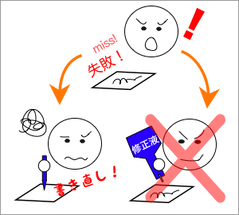
- 二重線などで修正しない（間違えたらすべて書き直す）
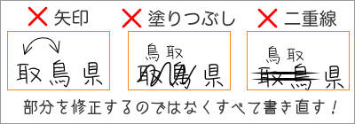
- 空欄をつくらない（書き忘れと思われないように、記載する内容がない項目には「なし」などと書く）
一般的な履歴書の書き方
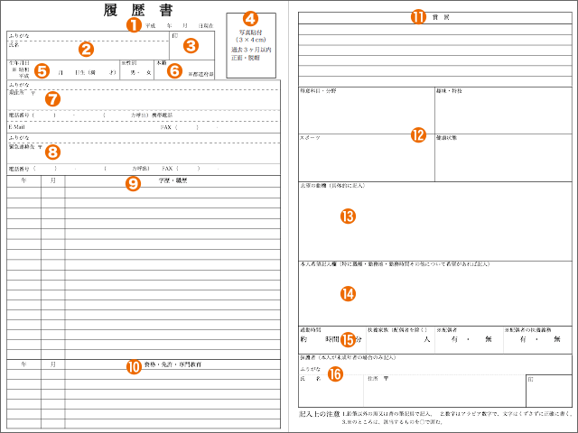
①作成年月日
作成年月日は、元号（平成××年）で記入するのが普通である。【参考→西暦・和暦・民国暦対照表】
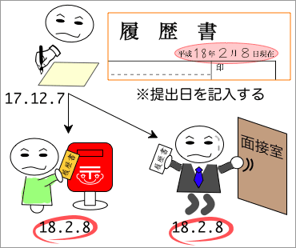
作成年月日は、実際に履歴書に記入した日ではなく、履歴書を提出する日付を記入する。たとえば、面接に持参するなら面接日が、郵送するならポストへの投函日が作成年月日となる。
②氏名とふりがな
氏名
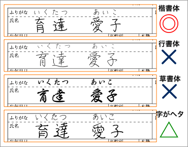
氏名は、大きめの文字で丁寧に書く。氏名は必ず、楷書体で書くようにする。読みにくかったり、読み間違えたりする可能性があるので文字を崩すのは良くない。字が下手な場合は、下手なのは仕方がないので、できるだけていねいに書くことが大切である。なお、姓（名字）と名（名前）は、『育達 愛子』のように間を空けて書くようにする。
ふりがな
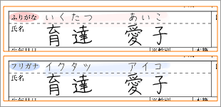
ふりがなは、『ふりがな』とあれば「いくたつ あいこ」のようにひらがなで、『フリガナ』とあれば「イクタツ アイコ」のようにカタカナで書く。ふりがなを書くときには、ふりがなと漢字の位置が合うように書く。
③印鑑
印鑑は、真っすぐきれいに押す。
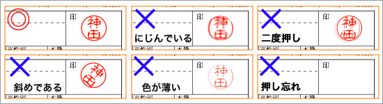
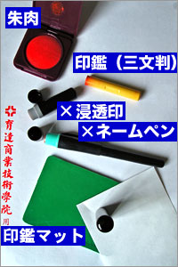
印鑑は、必ず朱肉・印肉で押す。ゴム印用のスタンプ台などを使ってはいけない。印鑑を押すときには、印鑑マットや薄い本などを下に敷くときれいに押せる。
印鑑は、三文判（市販されている安価な印鑑）で構わないが、朱肉不要の判子（浸透印／シャチハタやネームペンなど）は使わない。
なお、台湾ではフルネームが入った角形の印鑑が多いが、日本では姓だけの丸形の印鑑が使われる。日本では角形の印鑑は、会社の印鑑（社印）などの法人印として使われる。
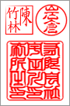
現在、市販されている履歴書には、印鑑を押す欄（押印欄）がないものが多い。その場合は、印鑑を押さなくともよいが、氏名を記入する欄の右端（氏名の直後）に印鑑を押してもよい。
④証明写真
証明写真は、できるだけ最近撮影したものを使わなければならない。特に指定がない場合は、３ヶ月以内に撮影したものを使う。
撮影場所
証明写真には、写真店や写真館（専用のスタジオがあるところ）で撮影したものを使うのがもっとも良い。一般のカメラ店や写真店で撮影したものでも構わないが、仕上がりは専用のスタジオがある写真店・写真館には及ばないだろう。コイン式のスピード写真（３分間写真）は、安い費用で撮影ができるが、履歴書に使うと悪い印象を持たれるおそれがあるのでやめた方がよい。なお、アルバイトやパートタイム用の履歴書であっても、スピード写真は避けた方がよい。カメラ店や写真店でのスピード撮影ならば、費用面でも大きな違いはないので、カメラ店や写真店で撮影すべきである。
- 証明写真（２枚または１シート）の撮影にかかる費用（目安）
-
- 写真館・写真店（専用のスタジオでカメラマンが撮影：デジタル撮影・ネガ撮影）
- 5000円〜10000円
- カメラ店・写真店（一般の店舗内でスタッフが撮影：デジタル撮影・ネガ撮影）
- 1500円〜2500円
- カメラ店・写真店（ポラロイドカメラやフォトプリンタによるスピード撮影）
- 1000円〜1500円
- スピード証明写真（コイン式の自動撮影機）
- 500円〜700円
使用できない写真
履歴書の写真は、証明写真として撮影したものを使う。次のようなものを履歴書に使ってはいけない。
- スナップ写真の切り抜き
- シールプリント（プリクラ）
- カメラ付きの携帯電話やデジタルカメラの画像をカメラ店などで現像したもの
- カメラ付きの携帯電話やデジタルカメラの画像を自分でプリント（印刷）したもの
- 写真館などで撮影したデータを自分でプリンタ（印刷）したもの
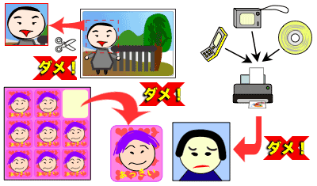
服装
証明写真は胸から上が写っているものを使う。服装は、Ｔシャツなどカジュアルなものを避け、帽子もとる（アルバイト用の履歴書ならばカジュアルな服装でもよいが、あまり派手なものはよくない）。
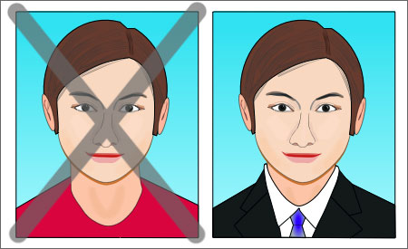
証明写真の服装は、ビジネスの場面で通用するものにする
- 証明写真撮影時の服装
- 女性の場合：
- 濃い色のスーツかジャケットに白のブラウス（かわいい服装やおしゃれな服装は軽い印象を与えるので避けた方が無難）
- ピアスやアクセサリは外し、派手なメイクも避ける
- 男性の場合：
- ダークスーツを着て、白ワイシャツにネクタイ（単色やストライプのものにし、柄物は避ける）を着用する
撮影時の注意
◎自然な笑顔で写る(左上) ×怖い顔をしている(右上)
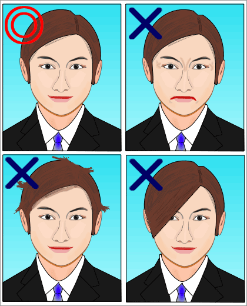
×髪がはねたままである(左下) ×前髪で目が隠れている(左下)
撮影時には、髪を整え、できるだけ自然な笑顔（口が大きく開いていない状態）で写るよう心掛ける。なお、男女を問わず前髪が目にかかるような髪型では、顔がわかりづらくなるので、撮影時に前髪をあげるか、事前にカットしておくべきである。
証明写真によって、本人の印象が大きく変わることがある。元気で若々しく写るために、以下の点に注意しよう。
- 撮影前日はしっかり寝る
- 撮影前日に飲み過ぎない
- 男はヒゲをきれいに剃る
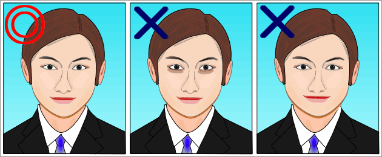
◎元気で若々しい(左) ×寝不足で目の下にくまができている(中) ×飲み過ぎで顔が腫れている(右)
カラーとモノクロ
証明写真は、モノクロ写真（白黒写真）の方が正式とされることもある（会社や学校側が履歴書をコピーするときにモノクロの方が便利なため）。ただ、厳密なきまりはないので、自分の好みで決めればよい。なお、最近は、カラーの写真を使う方が多いようである。
写真のサイズ
写真の大きさは、履歴書の枠内に記載されている通りにする。枠よりも大きすぎたり、小さすぎたりしてはいけない。写真店や写真館で証明写真を撮影したときに、希望のサイズに切ってもらえばよい。もし自分で切る必要があるときには、できるだけきれいに切る。
◎正しい貼り方(左) ×大きすぎる(中) ×小さすぎる(右)
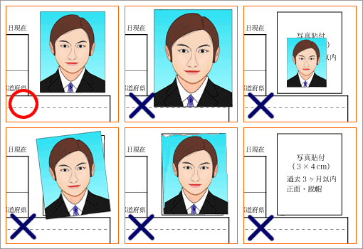
×斜めになっている(左) ×切り方が汚い(中) ×貼るのを忘れている(右)
写真の裏面
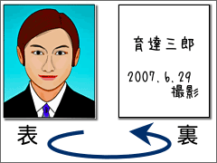
写真の裏には日付（撮影日か履歴書の作成日）と名前（受験番号などがあるときには、受験番号も）をボールペンなどで書いておく。これは、主に写真が剥がれてしまったときのためだが、会社や学校側で写真をはがして複写する場合もあるので、しっかり貼付したとしてもこれらの情報を書くべきである。また、写真を履歴書に貼るときには、糊をつけすぎないようにする（糊がはみ出ると汚くなる）。
⑤生年月日・性別
生年月日
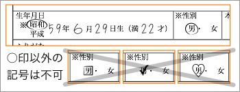
生年月日は元号（平成××年）で記入する（外国人の場合は西暦でも悪くはないが、元号に換算した方がよい）。〔昭和／平成〕の部分は、該当する方に○をつければよい。なお、選択式になっている箇所では、○以外の記号を使ってはいけない。【参考→西暦・和暦・民国暦対照表】
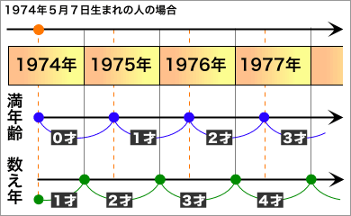
年齢は、必ず、履歴書に記入した作成年月日での満年齢とする。台湾では、一般に、満年齢ではなく数え年が使われているので、混同しないように注意する。
性別
性別の欄は、該当する方に○をつける。該当しない方を消したりする必要はない。
⑥本籍
本籍の欄は、「福岡県」のように本籍所在の都道府県名を記入する。「都道府県」が選択式になっている場合には、「福岡」とだけ書いて〔県〕のところに○をつける。
外国人の場合は、国籍を記入すればよい（例：「台湾」「中華民国」「大韓民国」）。「都道府県」が選択式になっていても特に選ばなくてよい。また、「都道府県」の部分を消したりする必要もない。
⑦現住所・連絡先
現住所
現住所は、日本国内の場合は都道府県名から、国外の場合は国名から記入する。
番地やアパート・マンション名、部屋番号なども省略せずに正確に記入する。
×：広島市中区南千田町７-２-13-207
◎：広島県広島市中区南千田町７丁目２番13号 メゾン小池207号室
ふりがなは、氏名の場合と同じく、『ふりがな』とあれば平仮名で、『フリガナ』とあればカタカナで書く。
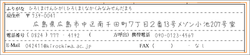
ふりがなは、番地の前までの部分で、漢字にだけ振ればよい。ただし、建物名が特に読みにくいものならば位置をあわせて振った方がよい。
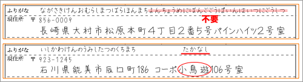
連絡先
電話番号（自宅の固定電話）か携帯電話番号は、少なくともどちらか一方を必ず記入する。固定電話は、市外局番から記入する（国外の場合は、「+886-21-****」のように国際電話の国番号をつける）。
履歴書によっては、携帯電話番号を書く欄がないものもある。しかし、携帯電話は重要な連絡手段なので、携帯電話番号があれば〔⑧緊急連絡先〕などを利用して記載しておくのがよいだろう。
ファックスや電子メールが利用できれば、該当する欄に記入する（該当する連絡手段がを所有していなければ、空白にするか「なし」と書けばよい）。なお、電子メールを記入するときには、アルファベットと数字がはっきり区別できるような文字で書くように気をつける。
⑧緊急連絡先
緊急連絡先は、現住所が実家・帰省先と異なる場合に記入する欄である。現在在学している学校や在職している会社の電話を緊急連絡先としてはいけない。
親元を離れて一人暮らしをしている学生などは、実家・帰省先の住所と電話番号を記入しておく。書き方は、〔⑦現住所・連絡先〕と同じである。
実家で親と同居しているときなどは、特に記入しないか、「同上」と書けばよい。
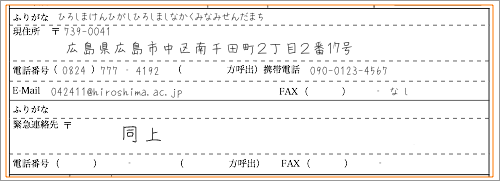
現住所が実家・帰省先と異なる場合でも、現住所以外への連絡を希望しないときは、特に記入しなくてよい。なお、欄を空白にせず、「不在の際は携帯電話にご連絡下さい。」とか「留守の場合は、恐れ入りますが携帯電話にご連絡願います。」などと書いておけばより丁寧である。
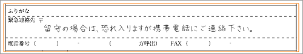
⑨学歴・職歴
学歴と職歴は、項目ごとに分けて書く（学歴と職歴を混ぜて書かない）。
学歴
学歴を書くときには、まず、１行目の中央に「学歴」と見出しを書く。見出しを書くときには、「学 歴」のように文字の間を１〜２文字分あけて目立つようにするとよい。
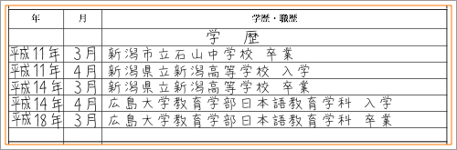
各行の左端を揃え、すべての項目で「平成」などの元号を省略せずに書く（「平成」を「Ｈ」のように略してもいけない）。なお、「年」については、元号で書いた方がよいが、外国人ならば西暦でもかまわない。ただし、元号と西暦とを混ぜて書いてはいけない。
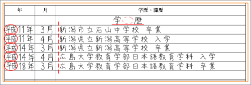
学歴は、古いものから順番に書いてゆく。同じ学校名が続くときも、繰り返し符号を使って「〃」「同」とはせず、完全な名称を書くようにする。
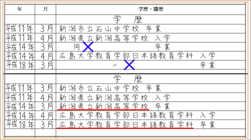
なお、項目が長くて１行に収まらないときには、２行以上になっても構わない。
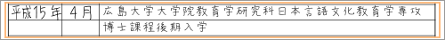
学歴欄への記載項目
学歴は、小学校から書いても構わないが、一般的には次のものを書けばよい。なお、小学校から書く場合も義務教育課程（小中学校）は卒業だけを書く。
- 最終学歴が大学以下
- 中学卒業［省略してもよい］、高校入学、高校卒業、大学入学、大学卒業（卒業見込み）
- 最終学歴が大学院（修士）以上
- 高校卒業、大学入学、大学卒業、大学院入学、大学院修了（在学中、修了見込み）
- 入学して卒業した場合：「卒業」（大学院、専門学校は「修了」）
- 入学したが卒業しなかった（卒業できなかった）場合：「○年次退学」
- 入学したまま、まだ卒業していない場合：：「○年在学中」
- 卒業していないが卒業が決まっている（卒業に必要な単位数以上を取得している／卒業試験に合格している）場合：「卒業見込み」
学校名の表記
学校名は略さずに書き、「○○市立」「○○県立」「国立」「私立」などの別ももれなく記入する（ただし、日本の国立大学では「国立」は省略するのが通例である）。
×：新潟高校卒業
◎：新潟県立新潟高等学校卒業
高校までは、学校名だけを記せばよいが、大学以上では学部・学科（研究科・専攻）までを記す（他に講座名やコース名などがあれば、それも記す）。
×：広島大学入学
◎：広島大学教育学部日本語教育学科入学
日本以外での学歴は、無理に日本語に翻訳せずそのまま書けばよい（「国民中学」「高等中学」などでよい）。なお、「○○市立」「○○県立」「国立」「私立」などの別の前に国名を書いておく。
×：私立育達高級職業学校入学
×：台湾大学文学院日本語文学系入学
◎：台湾 私立育達高級職業学校入学
◎：台湾 国立台湾大学文学院日本語文学系入学
卒業論文・卒業研究
希望する仕事と関係していたり、大学院に進学しているときなどは、卒業論文や卒業研究のテーマを書くこともある（ただし、必須ではない）。
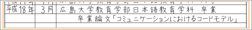
転学・編入学
学校を転学している場合でも、特に「○○校に転校」などと書く必要はない（入学と卒業時の項目を見れば転学していることがわかるため）。ただし、大学間の転学や大学への編入学は、「○○大学○○学部○○学科○○年次転入」「○○大学○○学部○○学科○○年次編入」と書くようにする（日本では大学間の転学は少ないため）。転籍（同じ大学での転学部・転学科）も同様に書けばよい。なお、在籍期間が連続している場合は、前の学校の転出・退学などを書く必要はない。
同じ学校に在学中に学校名などに変更がある場合がある。そのときは、入学→入学時の学校名／卒業→卒業時の学校名で書けばよい。学校名の変更を特に説明する必要はない。
学歴にならない経歴
一般に、以下のものは学歴には記載しない。これらの経歴を記載したい場合は、〔⑩資格・免許〕、または、〔⑫趣味・特技〕の欄に書く。
- 各種の通信教育
- 学習塾や受験予備校（大学受験だけでなく資格試験の予備校も含む）
- 各種の語学学校（日本語学校や英会話学校）
- 自動車学校
- カルチャースクールや習い事、稽古ごと（絵画教室、ダンススクール、書道、華道、茶道など）
- 職業訓練を行なう学校（調理師学校、美容学校など）
大学や専門学校の夜間部・二部、定時制高校などは、学歴として記載すべきものである。
なお、大学受験の予備校（補習班）などに通っていたために、高校卒業から大学入学までの期間が空白となる（職歴もないため何をしていたか不明になる）ような場合は「受験準備」と記入してもよい（ただし、一般的には、書く必要はない）。
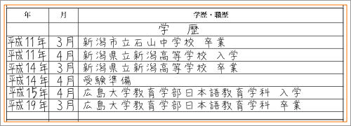
研究生・留学
大学の非正規生（研究生・聴講生）や別科・専攻科は、学歴欄に書いてよい。卒業や修了がないものについては、項目の末尾に「（平成○年○月まで）」のように書けばよい。
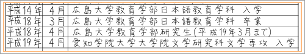
留学についても、就学期間が６ヶ月（半期、１セメスター）以上ならば学歴欄に書いてよい（研究者として留学したときは、職歴欄に書く）。卒業や修了がないものについては、項目の末尾に「（平成○年○月まで）」のように書けばよい。
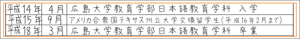
なお、短期研修や語学キャンプなどを書く場合は、学歴欄には記載せず、〔⑩資格・免許〕、または、〔⑫趣味・特技〕の欄に書くようにする。
職歴
学歴に続けて職歴を書く。学歴の最終項目から１行あけて「職歴」と見出しを書く（スペースに余裕がないときは間をあけなくてもよい）。見出しを書いたら、学歴と同様に、入社・退社を古いものから順に書いていく。職歴がないときには「なし」と書けばよい。
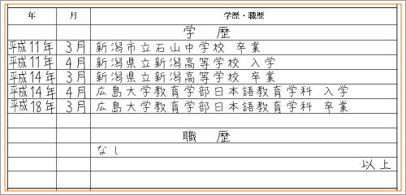
スペースに余裕がある限り、すべての職歴を記載するべきである。たとえ短期間で退職した場合でも、記載しないと意図的に虚偽の申告と見なされるかもしれない。職歴が多く、記入しきれないときには、勤務期間の長いものを選んで書き、すべての職歴は別紙にまとめて申告すればよいだろう。
入社の項目では、入社の年月に間違いがないようによく確認する。社名は、省略せずに正式名称を書き（例えば、「㈱○○社」「㈲○○社」ではなく「株式会社○○社」「有限会社○○社」とする）、会社の簡単な説明をカッコ書きで添える。スペースに余裕があれば、所属・役職・主な業務内容などをまとめて書くとよい。
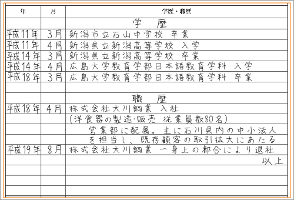
スペースに余裕がなかったり、転職者で、職務経歴書を別途作成する場合には、入社・退社を書くだけでもよい。
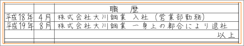
同じ会社で部署の異動、役職の変更（昇格・昇進）があった場合は、年月を示し「○○部に異動」「○○部○○課課長に昇格」のように書く。
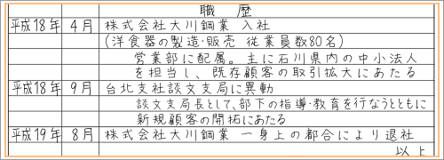
退社の項目では、退職理由も書くようにする。退職理由は、自分から退職したときには「一身上の都合により退社」と書くだけでよい（「給料が安いのでやめた」「セクハラでクビになった」などと、くわしく説明する必要はない）。会社が倒産したりリストラされた場合には、「倒産により退社」や「会社都合により退社」と書けばよい。
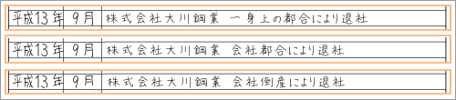
入社後現在まで勤務しているとき（現在在職中のとき）は、最後の行に「現在に至る」と書く。
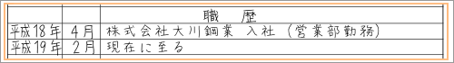
なお、短期のアルバイトやパートタイム勤務などを書く必要はない。ただし、応募する企業での勤務に役立つと思われるものや勤務が長期にわたる場合（例えば、２年以上同じアルバイトをしているとき）は書いて構わない。その場合には、「○○勤務（パートタイマーとして）」「○○勤務（アルバイトとして）」のように書けばよい（アルバイトやパートタイムでは「入社」とは書かないこと）。
勤務先・勤務形態による語の使い分け
| 勤務先・勤務形態 | はじめたとき | やめたとき |
| 会社員 | 入社 | 退社 |
| 公務員 | 入庁・入省 | 退職 |
| 団体職員 | 勤務 | 退職 |
| 自営業 | 開業 | 整理 |
| アルバイト／パートタイマー | 勤務（アルバイトとして）／勤務（パートタイマーとして） | 退職 |
| 派遣社員 | ○○［派遣会社の名称］から派遣社員として勤務 | 契約期間満了 |
職歴をすべて書いたら、右寄せで「以上」と書く。この「以上」という文字は、経歴に不正な付け足しがないことを示すものなので忘れずに書く。
なお、職歴に続けて賞罰を記入するときには、賞罰をすべて書いたところで「以上」と書く。
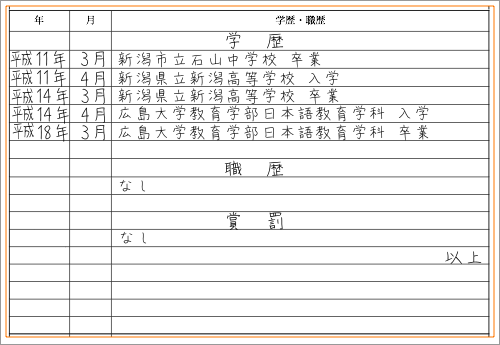
その他
履歴書によっては、欄が「学歴・職歴・賞罰」のようになっていることもある。この場合は、賞罰も忘れずに記入する。また、賞罰を記入する欄がない場合には、職歴に続けて賞罰を記入することもある。賞罰については、〔⑪賞罰〕を参照せよ。
⑩資格・免許
資格・免許は、希望する仕事に直接関係しないものでも、取得している資格をすべて書けばよい。取得している資格が多く、スペースに余裕がない場合は、価値の高いものを選んで書く。
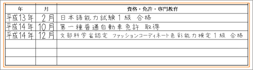
海外短期研修、資格セミナー受講、通信教育講座受講なども書いてよい。ただし、評価の対象になりにくいレベルのものは書かない方がよい（例：日本語能力試験４級、日本語能力試験３級）。また、日本国外で取得した資格については、簡単な説明を書き添えるようにするとよい。
| ◎履歴書に書いてよい資格 |
×履歴書に書かない方がよい資格 |
- 各種の運転免許（普通車、大型車、二輪車、船舶など）
- 各種の国家資格（危険物取扱者、アマチュア無線技士など）
- その他の検定試験２級以上（ワープロ検定、秘書検定、簿記など）
- 書道や茶道・華道の免状、囲碁や将棋の段位［初段以上］
- 武道の段位（柔道・空手・剣道など）
- TOEICやTOEFLのスコア
- スポーツ関係のライセンス（乗馬、ダイビング、グライダーなど）
- 指導者・インストラクター資格（エアロビクス、水泳、野球審判員など）
- 国内外の各種研修・セミナーへの参加
- 資格試験の専門学校や各種の通信教育の受講
|
- 語学の検定試験３級以下
- その他の検定試験３級以下
- 書道や囲碁や将棋の級位［初段未満］
- 業界が広告目的で認定する資格（そば打ち名人、ビヤマイスターなど）
- イベントとして実施される検定（オタク検定、時刻表検定など）
|
資格はすべて「取得」としてもよいが、免許ならば「取得」、検定ならば「合格」のように区別して書いた方がよいだろう。資格名は省略せずに書き、レベルや種別ももれなく記載する。例えば、「運転免許」ではなく、「第一種普通自動車免許」と書くようにする。同じ検定の複数のレベルに合格しているときは、最高レベルのものだけを書けばよい（日本語能力試験の２級と１級に合格しているときには、「日本語能力試験１級合格」と書けばよい）。
熱心さや向上心をアピールするために、取得を目指して勉強中のものを書いてもよい。「○○通信講座（現在受講中）」、「○○資格（取得見込み）」、「○○資格取得に向けて勉強中」のようにすればよい。また、一次試験だけ合格した場合（二次試験不合格、二次試験未受験などの場合）も「○○一次試験合格」のように書くことができる。なお、受験した検定の正式な合否はわかっていないが、自己採点などで合格が確実と思われるときには、「合格見込み」とすればよい。
⑪賞罰
賞罰の欄には、過去に受けた賞と刑罰とを書く。一般的には「なし」と書いておけばよい。
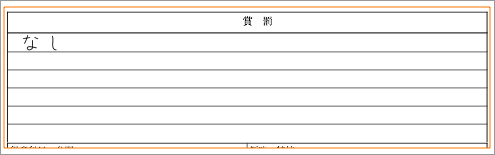
賞については、全国レベル以上の賞の受賞か全国レベルの大会・競技会での入賞以上を書くべきである。ただ、明確な基準があるわけではないので、知名度の高い大会・競技会ならば、入賞していなくとも参加した実績を記載してもよいだろう。校内表彰・顕彰は、一般に賞罰としては記載しない。
自治体レベル（県や市など）の賞や大会・競技会でも、最高位（優勝や最優秀賞など）ならば、受賞歴として書いてよいだろう。また、警察や自治体など公的機関によって表彰されたもの（おぼれている子供を助けた、災害ボランティアで熱心に活動したなど）も書いてよい。
罰については、道路交通法以外の罰金刑以上の刑罰を受けたことがあれば、正直に書いた方がよい。なお、道路交通法での罰金刑（ノーヘルやスピードオーバーなど）を書く必要はない。
懲役や禁固刑を受けたことがある場合、選考で大きな不利になることが予想されるが、犯罪歴を隠して採用されたとしても事実が判明した時点で解雇される可能性が高い。
最近は、賞罰の欄がない履歴書も多くなっている。その場合は、特に過去の賞罰を記載する必要はない。ただし、特に記載したい事項があるときには、〔⑨学歴・職歴〕の欄で職歴の後ろに「賞罰」という見出しを立てて書けばよい。
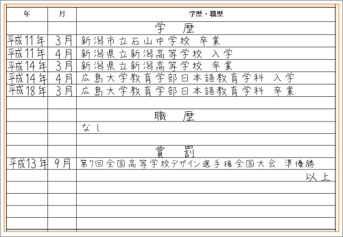
また、社員や職員の犯罪・犯罪歴が問題にされやすい企業や組織（上場企業、金融業、報道関係、教育産業など）に応募する場合は、罰がないことを明示した方がよいこともある。そのときは、同じように〔⑨学歴・職歴〕の欄に「賞罰」という見出しを立てて「なし」と書けばよい。
⑫趣味・特技
趣味・特技の欄は、自分の個性をアピールできるところなので、できるだけ空欄にはせず、工夫して書き込むようにする。
いずれの項目でも、あれもこれも書こうとせず、それぞれポイントを１〜３点くらいに絞って簡潔にまとめる。なお、趣味・特技の欄が広い履歴書ならば、文章の形にまとめて書けば印象がよい。
得意科目・分野
得意科目・分野は、学生のときに好きだった科目、得意だった学科について書く。ただし、「数学」「国語」と書くだけでなく、どのような点が好きか、何ができるのかなどを書き添えるのがよいだろう。
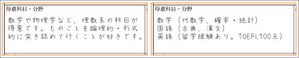
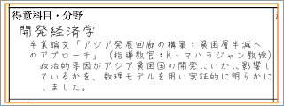
新卒者の場合は、大学で学んだ内容（専門知識を得た分野）をあげ、卒業論文や卒業研究について書いてもよい（卒業論文・卒業研究について書くときは指導教官も書くようにする）。
学校で学んだことだけでなく、興味を持って独学した分野、現在とりくんでいる社会的課題などについて書いても構わない。
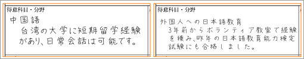
母語以外の語学能力（外国語能力）は、得意科目・分野に書けばよい。なお、得意科目・分野の欄のない履歴書では、語学能力（外国語能力）は『趣味・特技』に書くことになる。
趣味・特技
趣味・特技には、自分が興味・関心を持って行なっていることを書く。特別な才能や技量がなくても、興味をもって熱心に取り組んでいることならば、趣味・特技として構わない。
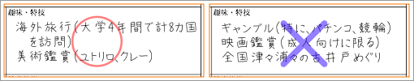
趣味・特技には、何を書いてもよいが、自分の個性が伝わるもの、知性や教養を感じられるものがよいだろう。ただし、あまり特殊なものや社会的に評価されないことは書くべきでない。
「読書」「音楽」「映画鑑賞」などの一般的な趣味を書く場合は、好きなジャンルや鑑賞の頻度などを具体的に書き添えるのがよい。ただし、趣味が「映画鑑賞」なのに「年に１・２本アクション映画を観ます。」では逆効果になるおそれがある（趣味としては頻度が少なすぎる）ので、よく考えて書くこと。
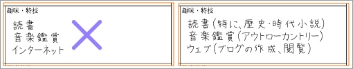
個性をアピールする欄なので、空欄や「特になし」にはしない方がよいだろう。ただし、すぐにバレるような嘘を書いてはいけない。
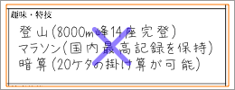
スポーツ
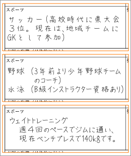
スポーツの欄には、自分が日頃行なっているスポーツを書く。特別な才能や技量がないものでも構わない。
スポーツを通じて得られた成果（大会の結果や資格など）や人間関係（地域社会との関わりなど）などがわかるように書くのがよい。
健康状態
健康状態については、大きな持病や障害がない限り「良好」「きわめて良好」と書けばよい。
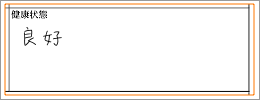
ここでいう大きな持病や障害とは、病院で健康診断書を出してもらうとき、「医師の意見」として「業務に支障あり」と記載されるような病気やケガのことである。就職や就学では、履歴書と同時に健康診断書を提出するのが一般的なので、持病や障害があるときには、健康診断書にあわせた記述をすればよい。
なお、「毎日ランニングをして鍛えているので、きわめて良好です。」、「ジムに通ってトレーニングしていますからきわめて良好です。」、「きわめて良好（高校以来、病欠はゼロです）」のように、具体的なアピールを含めて書いても構わない。
もし、履歴書を作成するときにケガや病気（カゼなど）をしていても、予定される就職・就学時までに治るものであれば、「良好」「きわめて良好」と書いてよい。
⑬志望動機
志望動機には、以下の内容をまとめて書く。
- その業種をなぜ希望するのか
- その会社をなぜ希望するのか
- その会社で自分は何をしたいのか
- その会社で自分に何ができるのか
どの企業・個人にもあてはまるような一般的で曖昧な表現（「御社の将来性に魅力」／「職種に対する適性がある」）は避け、できるだけ具体的な内容を書くようにする。形式にとらわれず自分の考えを自分のことばで伝えることが大切である。
⑭本人希望記入欄
職種（業務内容）、配属先、勤務地など雇用条件の希望を記入する。
特に書くことがなければ、簡単な自己PR（仕事に対する熱意など）を書いても構わない。できるだけ空欄や「特になし」にはしない方がよいだろう。
給与や勤務時間に関する内容は書かない方が無難である（マイナス評価を受けかねない）。給与や勤務時間について書く場合は、どうしても譲れない条件だけにとどめる。
⑮通勤時間・配偶者
通勤時間や配偶者の有無は、すべて事実を正確に記入する。
配偶者
配偶者の有無については、結婚していれば「有」、結婚していなければ「無」に○をつける。なお、結婚しているかどうかは、戸籍上の記録によって判断する（内縁、事実婚があっても、戸籍上で独身ならば、「無」に○をつける）。
結婚しているときは、「配偶者の扶養義務」についても記入する。結婚していなければ、「配偶者の扶養義務」の欄には何も書かない。「配偶者の扶養義務」とは、配偶者（自分の妻／自分の夫）の生活に必要な費用を負担しているかどうかをいう。日本で所得税を納税しているときは、配偶者が所得税上の扶養に入っていれば「有」にする。
履歴書の書式によっては、扶養家族の人数を記入する欄があるものがある。その場合は、配偶者以外で所得税上の扶養に入っている親族（子どもや祖父母）の数を記入する。扶養家族がいないときには、「０」または「なし」と書く。
通勤時間
通勤時間は、現住所から勤務地（勤務予定地）までの所要時間を書く。仮に通勤時間が長くても事実を偽らずに書くべきである。なお、勤務地が複数ある場合は、希望する勤務地までの所要時間を書けばよい。特に勤務地の希望がなければ、応募要項に記載されている問合せ先（本社など）までの所要時間を書けばよい。
通勤時間は、日常の交通手段での最短所要時間（交通機関の待ち時間や乗り換えなどにかかる時間は除く）を記入し、数字はできるだけ切りのよいもの（５分、10分,15分,30分,45分,１時間など）にする。
なお、（希望する）勤務先が現住所からきわめて遠く（例えば、大阪に住んでいる者が北海道の会社を希望する場合など）、明らかに通勤が不可能であれば、何も書かずに空欄のままにしておいても構わない。また、採用された場合に引越しを考えているときなどは、「新住所より××分」、「○○年○月に××に転居予定です。」などと書けばよい。
履歴書の書式によっては、通勤時間のほかに最寄駅（現住所からもっとも近い距離にあり、通勤に利用できる鉄道の駅）を記入する欄があるので、「JR総武本線秋葉原駅」のように路線名と駅名を書く。
⑯保護者記入欄
保護者記入欄は、履歴書の本人が未成年の場合に、親などが記入する欄である。本人が20歳を超えているときには、記入は不要である。
また、履歴書の書式によっては保護者記入欄の下部に採用者側（会社や学校など）が記入する欄があるものがある。採用者側が記入する欄には何も記入してはいけない。
履歴書の送り方
履歴書は、書いただけでは意味がない。応募する会社や学校に届ける必要がある。ここでは、履歴書を送る際のルールについて学ぶ。
最終確認事項
履歴書を送る前に、以下の点を改めて確認する。
- 項目の記入漏れはないか
- 誤字や脱字などはないか
- 写真の貼り忘れはないか
- 汚れや折れなどはないか
また、問合せがあった場合に備え、履歴書を郵送する前に必ずコピーをとっておくようにする。
履歴書を郵送する場合
履歴書は郵送する場合と、持参する場合とがある。履歴書を郵送するときは、以下のようにする。
添え状
履歴書を郵送するときには、添え状（カバーレター）を付すのが一般的である。添え状はビジネス文書なので、コンピュータを使ってＡ４横書きで作成する。
添え状は、書類の送付を確認する事務的な文書なので、文面にこだわる必要はない（志望動機やら自己PRやらは書かない）。
添え状の日付は、履歴書の作成年月日と同じにする。また、受取人は封筒表面の宛名と同じものでよい。
差出人の住所・名前は、受取人に続けて上部に右寄せでも構わない。いずれの場合も、名前は自筆のサインとした方がよいだろう。
ビジネス文書なので、「応募書類の送付について」のように件名を書いた方がよいだろう。
封筒の選び方
履歴書には、無地の白封筒（ケント封筒）を使うのが基本である（二重封筒である必要なない）。茶封筒（クラフト封筒）は失礼と思われることがあるので避けた方が無難である。なお、ビジネス文書なので、カラー封筒は使うべきでない。
履歴書を送るときには、封筒の左下に、忘れずに「履歴書在中」または「応募書類一式在中」と赤字で書いて四角で囲う。
なお、市販の履歴書セットでは、大きな角形の白封筒（履歴書折らなくても入るサイズのもの）と、縦長の小さな白封筒（三つ折りにした履歴書が入るサイズのもの）の封筒の２種類が附属しているのが普通である。これにはあらかじめ「履歴書在中」と赤字で印刷されているので、そのまま使えばよい。別に封筒を購入するときは、開封するときのことを考え、履歴書よりも少し大きめのものを選ぶとよい。
特に指定がなければ、履歴書を折らずに入れることができる大きさの封筒を使用するのがよいだろう。また、履歴書を折るときは、写真の部分を避けて三つ折りにする。
履歴書を郵送するときには、郵送用の封筒に直接履歴書を入れて構わない。履歴書を封筒に入れ、さらに郵送用の封筒に入れる必要はない。
ただし、他の応募書類と一緒に大型封筒で送るときは、履歴書を別の封筒に入れることもある。そのときは、封筒の口を折るだけでよい（特に糊付などは不要）。
宛名の書き方
書類を封筒に入れる前に、封筒に宛名と差出人を書く。
宛名
住所、番地、社名をいずれも略さずに書く。封筒の大きさにかかわらず、表面の中央が受取人になるようにレイアウトするのが普通である。
なお、受取人の書き方は次のようにすればよい。
- 部署宛に送る場合の書き方
-
- ○○社人事部御中
- ○○社人事部長殿
- ○○社人事部採用係御中
- 担当者の姓がわかっている場合の書き方
-
- ○○社人事部部長山田様
- ○○社人事部採用担当山田様
- ○○社人事部採用係山田様
- 複数の担当者（名前がわかる／名前がわからない）がいる場合の書き方
-
- 部署も担当者の名前や人数もわからない場合の書き方
-
- ×正しくない書き方
-
- ○○社御中採用担当者様
- ○○社人事部御中山田様
- ○○社人事部部長殿山田様
差出人
封筒の裏面に差出人の住所、名前を書く。
住所を右側から書きはじめ、名前が中央に来るようにレイアウトする（一般的な中貼の封筒では合わせ目の上に名前を書くことになる。ただし、文字が書きにくい合わせ目を避けて書く方法もある）。
住所は、番地や建物名を略さずに書く。なお、学校に在学している場合は、校名（大学なら学部名まで）をカッコ書きで添えるとよい。
封筒の裏面には、左上に差出年月日を書くようにする。差出年月日は、履歴書の作成年月日と同じにすればよい。
返信用の封筒
履歴書や応募書類の返送を求める場合は、返信用の封筒を同封する（ただし、応募要項に「応募書類の返送はしない」と明記されている場合は同封しないこと）。
返信用の封筒は、表面に自分の住所と名前を書き、名前の下か左下に「行」と書く。ただし、応募要項に、返信用封筒の宛名に「様」と書くように書かれていれば、「行」ではなく「様」とする。返信用封筒の裏面には何も書かない。
封筒の入れ方
封筒には、添え状を先頭に、添え状に記されている順番で書類を入れる。応募書類が複数あるときは、クリアファイルに入れるか、ゼムクリップで留めてもよい。
履歴書を折らないときは、履歴書の表が手前になるように入れる。履歴書を折っているときは、写真の部分が手前になるように入れる。
応募書類を封筒に入れたら、閉じ口の部分に「封」「〆」「緘」などと割書きし（割印でもよい）、口をしっかりと糊付する。セロハンテープやステイプラー（ホッチキス）を使ってはいけない。
郵送の方法
履歴書や応募書類は普通郵便で送るのが基本である。締め切り直前に速達で郵送するのは印象が悪いので、期日に余裕を持って普通郵便で送るようにする。書留や配達記録などは、先方に手間をかける（受取のサインや押印が必要）ことになるので避ける。
履歴書を持参する場合
履歴書を持参する場合も封筒（履歴書を折らずにいれられるもの）に入れた方がよい。
封筒の表面に赤字で「履歴書在中」「応募書類一式在中」と書いておく。宛名などを書く必要はない（郵送と同じように宛名を書いても構わない）。ただし、裏面には、住所、氏名（学校名・学部名）を書くようにする。
同封したもののリストを作成して、応募書類一式を封筒に入れる。
封筒は封をせず、すぐに中が取り出せるようにしておく。